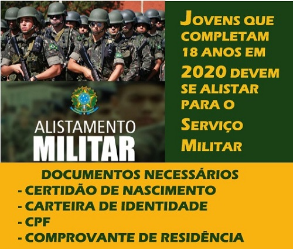

Passo 1: Requisitos
Verifique os requisitos necessários para o alistamento militar:
- Idade mínima de 18 anos
- Documento de identidade
- CPF
- Comprovante de residência
Passo 2: Agendamento
Agende a data para comparecer à Junta de Serviço Militar mais próxima.

Passo 3: Comparecimento à Junta
Compareça à Junta de Serviço Militar no dia e horário agendados.

Passo 4: Documentação
Leve os documentos necessários, como identidade, CPF e comprovante de residência.
Passo 5: Alistamento
Preencha os formulários de alistamento e participe de exames e entrevistas, se necessário.

Passo 6: Certificado de Alistamento Militar
Após o processo, obtenha o Certificado de Alistamento Militar.